Create the Playfield Mesh
Import the Shapes
Open Blender and delete everything (press A, X, D). Click on File -> Import -> Scalable Vector Graphics (.svg) and choose playfield.svg which you exported in the last step. Select wood in the outliner, move your cursor over the viewport and hit numpad . (zoom in on selected), numpad 7 (top view).
If you haven't grouped your inserts, you'll have a bunch of "Curve" objects. Select them all and hit CTRL+J to join them. Rename the joined object to inserts. Hit A and choose Object -> Set Origin -> Origin to Geometry. You should see something like this:
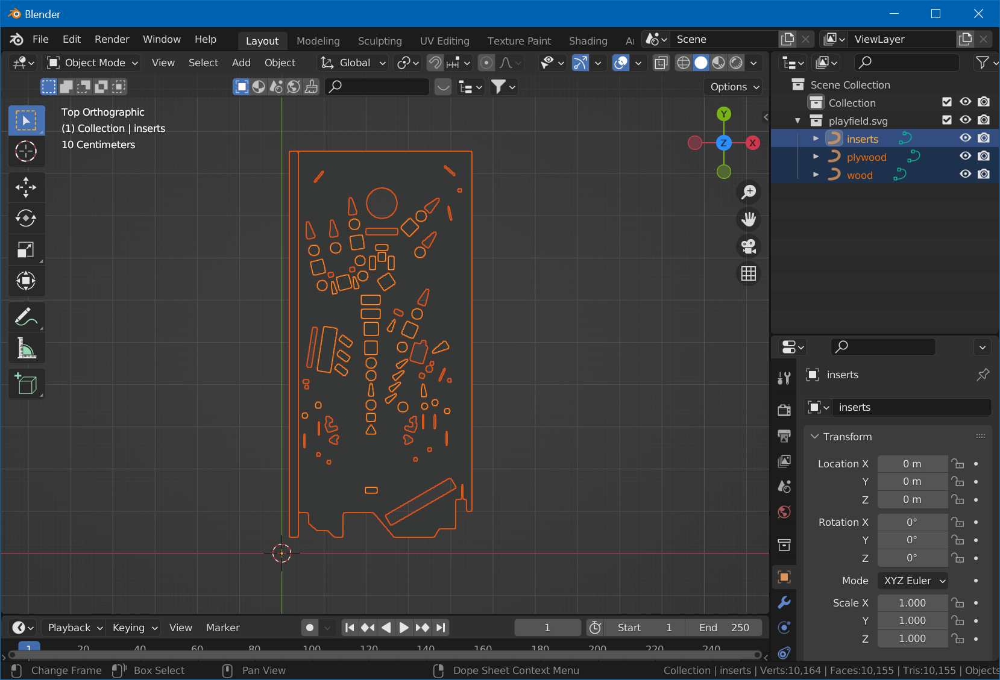
Make sure that all three shapes (inserts, plywood and wood) are there.
Extrude
Select the wood object. Under Material Properties, remove the SVGMat material so we better see the shape. Convert the shape to mesh by choosing Object -> Convert To -> Mesh. Hit Tab for edit mode, A to select all, then clean up the mesh by going to Mesh -> Cleanup -> Limited Dissolve, followed by M and By Distance (merge by distance).
Hit E to extrude and eyeball it to something more or less accurate - but remember the number (you can of course always measure and type in the number). Hit Tab to go back to object mode.
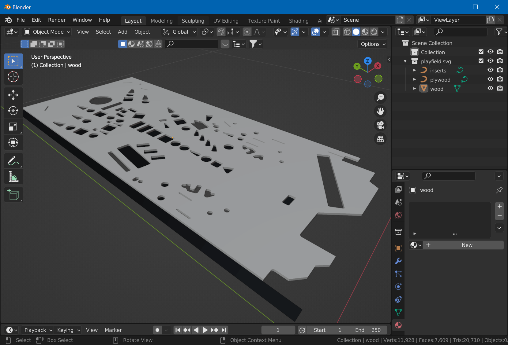
Smooth
Since our cuts are round, let's smooth out the mesh. Select Object -> Shade Smooth. Don't panic, we'll fix the normals. Switch to edit mode (Tab) and select one of the top faces. Hit Shift+G and select Coplanar. While holding Shift, select one of the bottom faces. Hit Shift+G again and choose Coplanar. Press CTRL+I to invert the selection. Choose Select -> Select Loops -> Select Boundary Loop. You now have all edges of the inserts as well as the outer borders selected.
Make these edges sharp by selecting Edge -> Mark Sharp. Hit A to select all and choose Mesh -> Normals -> Reset Vectors. You should how have a mesh with a flat, uniform top and smooth inserts.
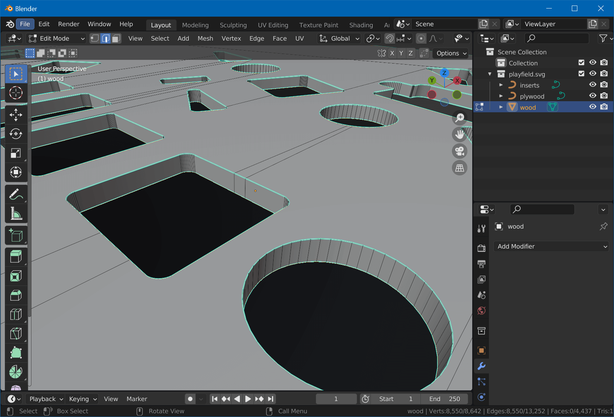
Maybe now it's a good time to save your project. Name it Playfield.blend.
Convert Other Objects
We don't need to extrude the other objects but convert them to a mesh so we can UV-map them. Exit edit mode with Tab and select the inserts object. Remove SVGMat, select Object -> Convert -> Mesh, and hit Tab for edit mode.
Press A to select all, select Mesh -> Cleanup -> Limited Dissolve, and hit M, By Distance. Exit edit mode by pressing Tab. Since we extruded to the top, we need to align the inserts mesh. Hit G, Z, and type the distance you remembered when extruding.
Finally, select the plywood object, remove its material and convert it to a mesh as well. The result should look like that:
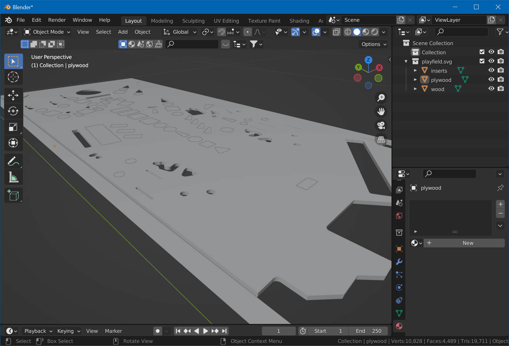
UV-Map
Now we will map our objects, so they perfectly align with the masks we've created in the previous step. There is just one add-on for Blender that we need to install first, to make this quick.
The add-on is called TexTools. Go to the GitHub page and download the archive of the repo. In Blender, choose Edit -> Preferences -> Add-ons, click on Install, select the downloaded archive, and enable the checkbox after installation. Then, close preferences.
Seams
Now we'll create seams for the plywood edges so we can easily unwrap them. We'll create them on the side facing the player, so they aren't visible when playing.
Hide the inserts and plywood objects, and orbit 180° around your table in the viewport. Select wood, Tab for edit mode, 2 to select edges. Then, Shift-select one edge of each hole in the mesh. Additionally, select the four outer edges of the mesh. When done, click on UV -> Mark Seam.
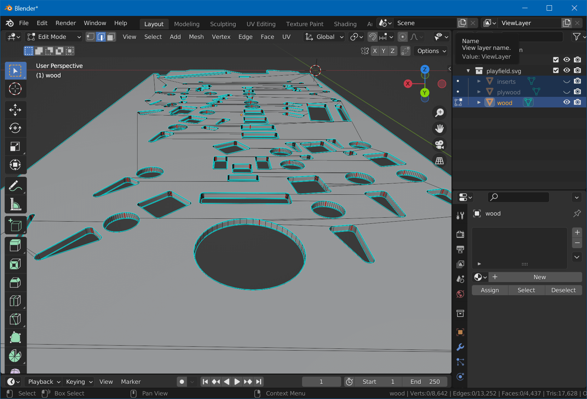
Hit Tab to exit edit mode, and unhide the inserts and plywood objects again. Change to the UV Editing workspace. On the right, be sure to be in object mode, hit 7 for top view, and A to select all. Then Tab for edit mode, and 3 for face selection (it's important to have all objects selected before switching to edit mode).
Top Surface
Let's map the top surface first. Select a face of wood's top surface, hit Shift+G and choose Coplanar. Make sure that besides the wood surface, also the inserts and the plywood mesh (but not the bottom surface or the edge faces) have been selected. Then click the UV menu and select Project from View (Bounds).
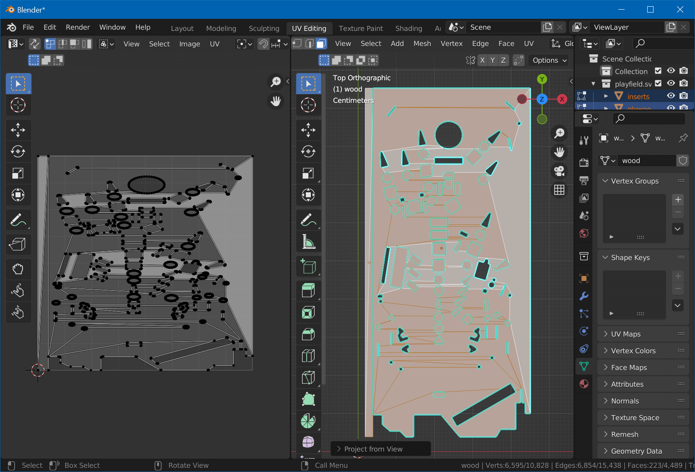
The Bounds part is important, because it will spread the map across the entire tile, aligning it with our maps. Hit Tab to exit edit mode.
Bottom Surface
Select the wood mesh. Hit Tab for edit mode and select one of the faces of the backside. Press Shift+G and choose Coplanar to select the entire surface. Then hit 7, 9 and choose UV -> Project from View. On the left, move the mesh outside of the UV tile by selecting the island and hitting G.
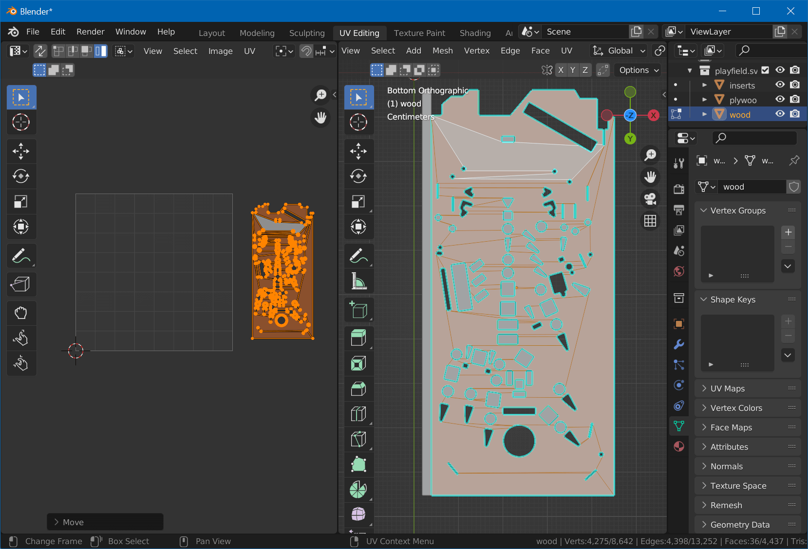
Plywood Edges
Next are the plywood edges. With the bottom surfaces still selected, Shift-select one face of wood's top surface, Shift+G, Coplanar, followed by Ctrl+I (select inverse). Now, only the edges should be selected.
From the UV menu, choose UV Unwrap. On the left, you should see all edges unwrapped as rectangles.
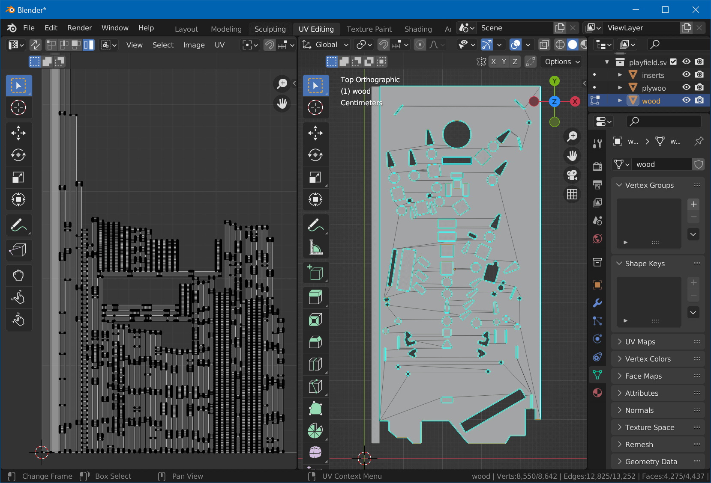
Note
If you forgot to mark a seam, you'll get circular islands like this:
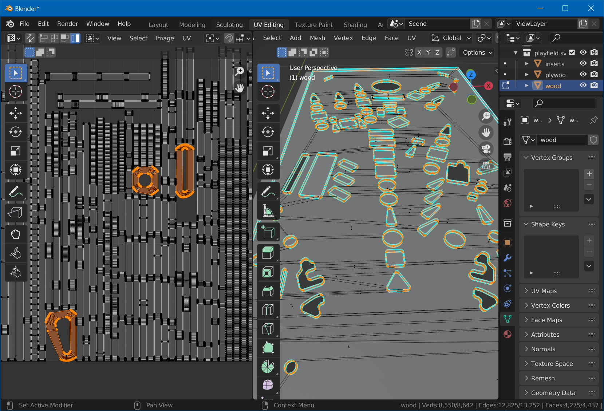
In this case, simply select an edge of each of the island, select UV -> Mark Seam, and UV Unwrap again.
Now, on the left, hit 4 for island selection mode, and select all horizontal islands. Hit R, type 90 and Enter. Type A to select all islands, open TexTools by hitting N and selecting TexTools, expand the UV Layout section, and left align all islands.
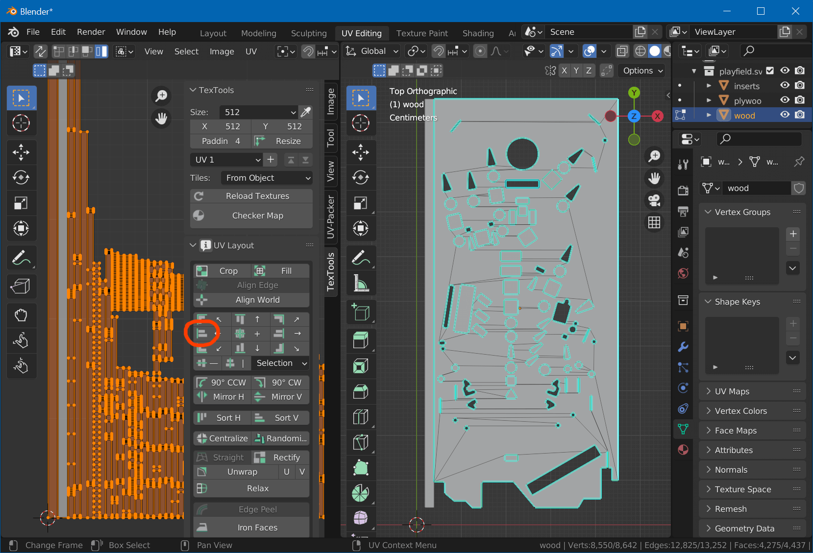
Hit G, X and move them to the left side, out of the tile.
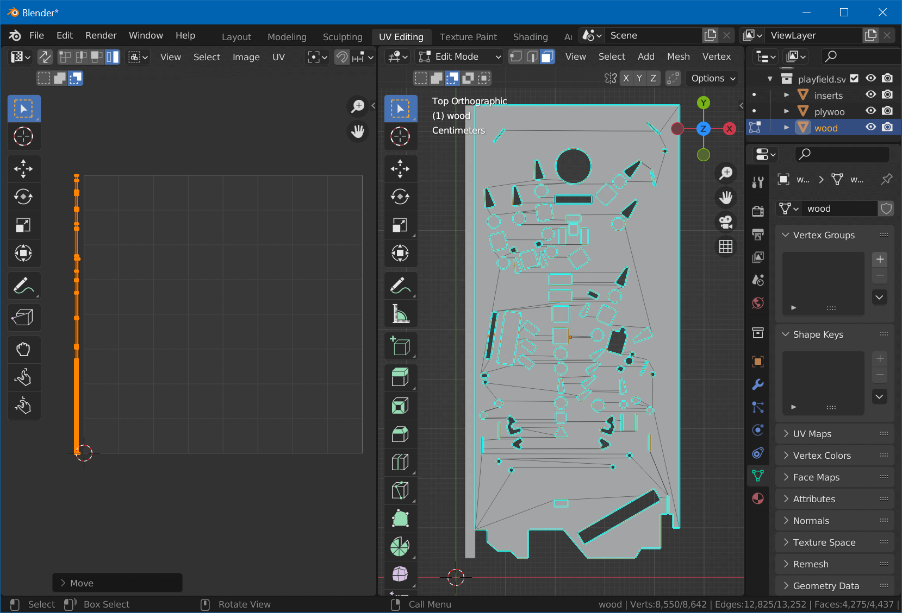
Press Tab to exit edit mode.
Place the Islands
Now we need to place the edge islands as well as the bottom surface back on the tile. We didn't do that before, because we need the top surface mapping visible in order to know where to place them.
On the right side, hit A to select all, then Tab to enter edit mode. Move the split view a bit to the right, so you'll have more space on the left.
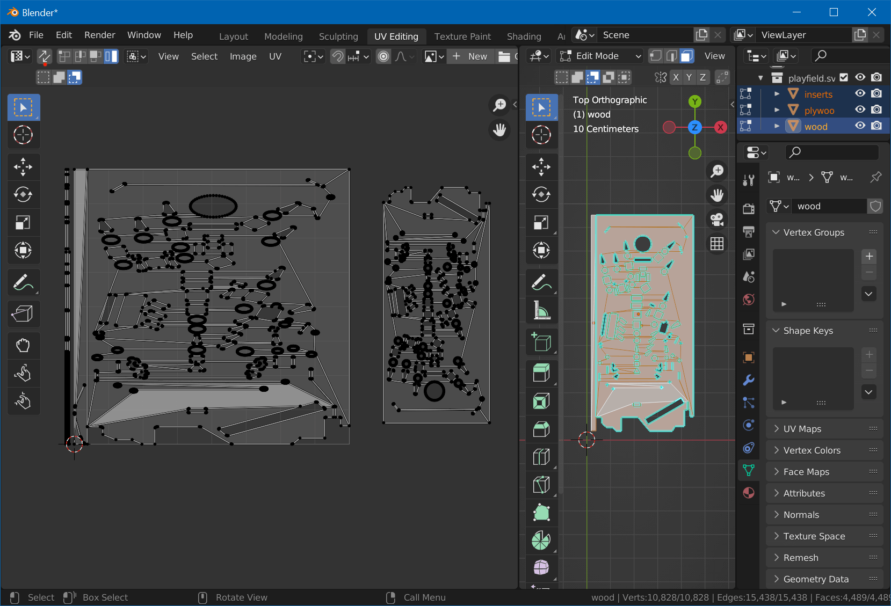
First, by using G, R and S, place the bottom surface wherever there is a bit space left. Then, grab all the edge islands and make them fit into the plywood rectangle. It doesn't have to be super precise, since you can later align the texture in Substance, but it shouldn't overlap with the top surface and should stay inside of the UV tile.
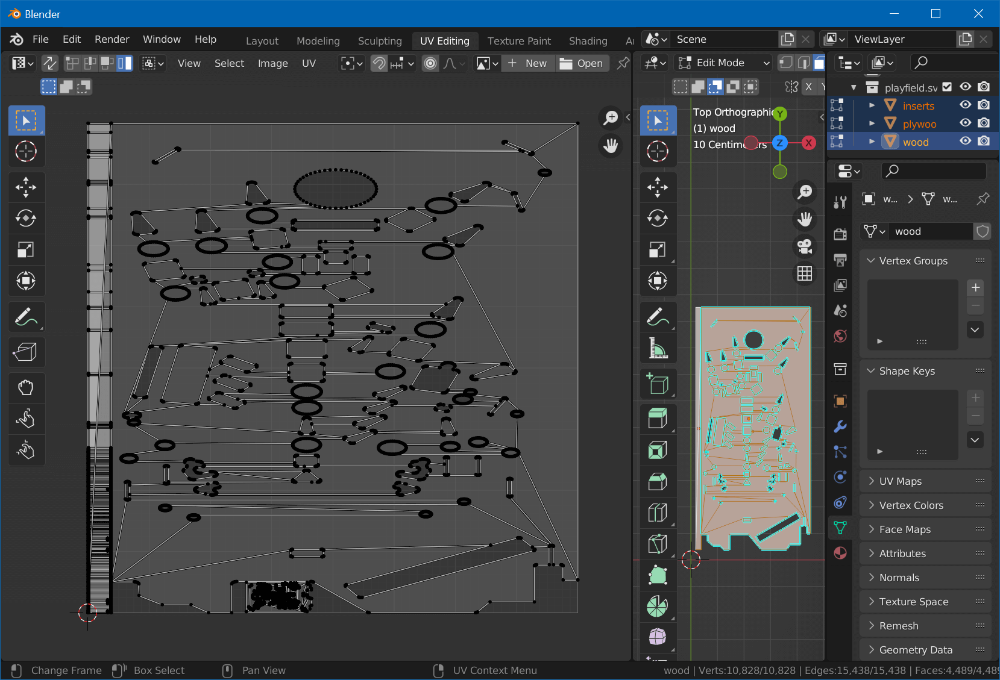
You might need to X-resize some of the edge islands. The goal is to fit them all in on top of the plywood object.
Export
Mesh work is nearly done :)
Back in the Layout workspace, in object mode, select wood and under Modifier Properties, add the Triangulate modifier. Do the same for inserts.
Then, select inserts and wood and click on File -> Export -> FBX (.fbx). Check Limit to Selected Objects. Name it Playfield.fbx and hit Export FBX.
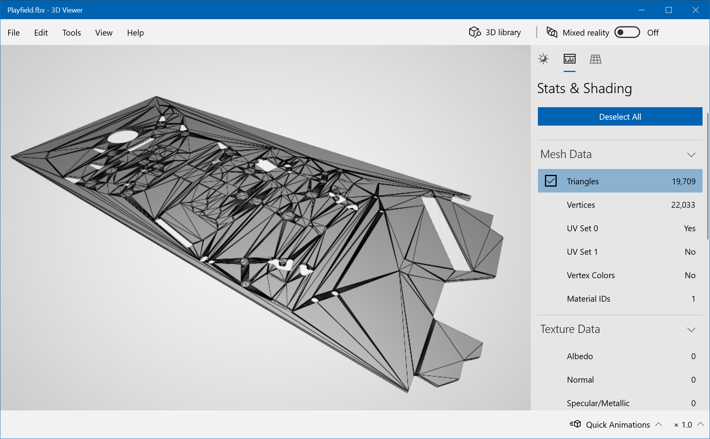